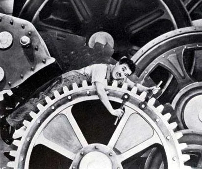
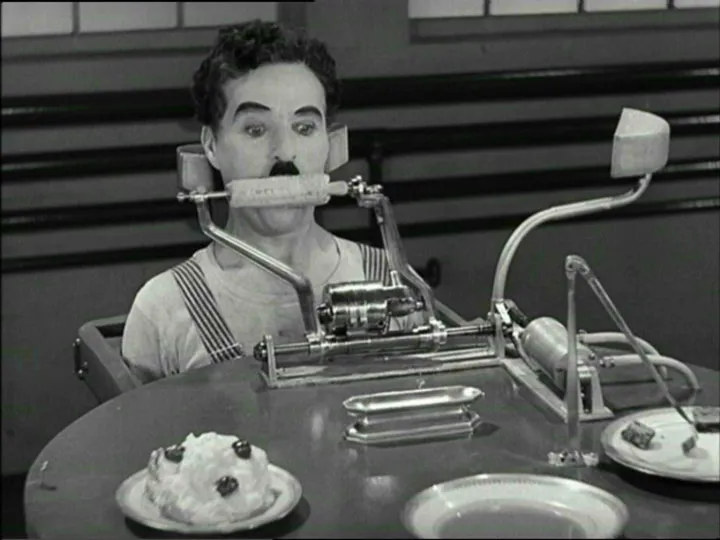

CHAPTER 1 · 통제 방식의 진화
톱니바퀴 속의 인간 (1936)

톱니바퀴 속으로 — 찰리 채플린, 〈모던 타임즈〉(1936)

자동 급식 기계 —
점심시간마저 최적화의 대상이 되다
1936년에는 코미디였다. 알고리즘이 배달 노동자의 식사 시간을 지우는 오늘 — 이 장면은 코미디인가, 다큐멘터리인가.
예술은 보건학보다 반세기 먼저 이 위험을 기록했다
찰리 채플린, 〈모던 타임즈〉 (1936)